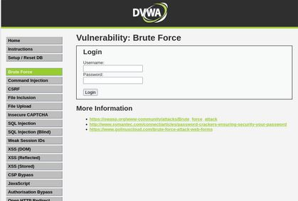
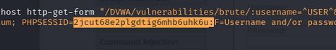

Приобретение практических навыков по использованию инструмента Hydra для брутфорса паролей.
Чтобы пробрутфорсить пароль, нужно сначала найти большой список
частоиспользуемых паролей. Его можно найти в открытых источниках, я
взяла стандартный список паролей rockyou.txt для kali linux
(рис. 1).
Захожу на сайт DVWA, полученный в ходе предыдущего этапа проекта. Для запроса hydra мне понадобятся параметры cookie с этого сайта (рис. 2).
 # Выполнение лабораторной работы Чтобы получить информацию о параметрах cookie я установила соответствующее расширение для браузера [@cookies], теперь могу не только увидеть параметры cookie, но и скопировать их (рис. 3).
Ввожу в Hydra запрос нужную информацию. Пароль будем подбирать для пользователя admin, используем GET-запрос с двумя параметрами cookie: безопасность и PHPSESSID, найденными в прошлом пункте (рис. 4).
 # Выполнение лабораторной работы Спустя некоторое время в результат запроса появится результат с подходящим паролем (рис. 5).
Вводим полученные данные на сайт для проверки (рис. 6).
Получаем положительный результат проверки пароля. Все сделано верно (рис. 7).
Приобрела практические навыки по использованию инструмента Hydra для брутфорса паролей